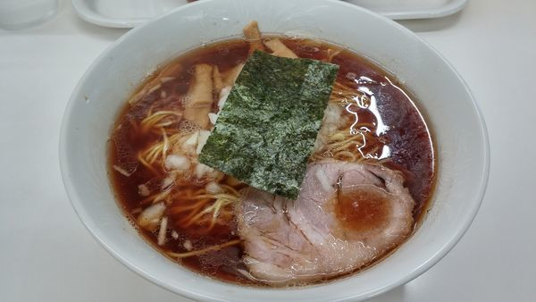

5.中華そば専門店あさひ軒
王道八王子ラーメンが楽しめる中華そば専門店！
- 

- img1
- img2
- MAP
住所：〒191-0065 東京都日野市旭が丘６−５−１ レスポアール旭ヶ丘
連絡先：042-584-7333
営業時間：11:00~21:00
定休日：月曜日
最寄りのバス停：首都大学東京前 徒歩2分
備考：~999円
食べログ：https://tabelog.com/tokyo/A1329/A132903/13066306/
最寄りの時刻表：首都大学東京前
地域の味を楽しめる！
満腹グルメコース
1.勝っちゃんらーめん
あっさりとした味が特徴のラーメン屋！
住所：〒191-0065 東京都日野市旭が丘２丁目３−１７
営業時間：11:30~14:30、日曜のみ17:00~20:00
定休日：月曜日、木曜日
最寄りのバス停：旭が丘 徒歩1分
備考：~999円
食べログ：https://tabelog.com/tokyo/A1329/A132903/13217925/
最寄りの時刻表：旭が丘
2.中華そば珉珉
もちもち食感の八王子ラーメンが食べられるお店
住所：〒191-0065 東京都日野市旭が丘２丁目５−４
連絡先：090-7248-2027
営業時間：11:00~16:00、17:00~22:00
定休日：月曜日、火曜日
最寄りのバス停：旭が丘 徒歩2分
備考：~999円
食べログ：https://tabelog.com/tokyo/A1329/A132903/13205812/
最寄りの時刻表：旭が丘
3.里やま
和食を中心とした幅広い一品料理を扱う居酒屋さん
住所：〒191-0065 東京都日野市旭が丘３丁目２−２４ 旭ケ丘ハイツ 1F
連絡先：042-583-8948
営業時間：11:30~14:00、17:00~23:00
定休日：日曜日
最寄りのバス停：旭が丘 徒歩2分
備考：1000円~1999円
食べログ：https://tabelog.com/tokyo/A1329/A132903/13106866/
最寄りの時刻表：旭が丘
4.Kitchen&Cafe Canaan
オシャレな雰囲気の健康にやさしいキッチンカフェ
住所：東京都日野市旭が丘3-6-6 1F
連絡先：042-589-5411
営業時間：11:00~16:00
定休日：日曜日
最寄りのバス停：首都大学東京前 徒歩3分
備考：~999円
公式サイト：http://www.hikarinoie.org/facility/shurou/canaan
最寄りの時刻表：首都大学東京前
5.中華そば専門店あさひ軒
王道八王子ラーメンが楽しめる中華そば専門店！
住所：〒191-0065 東京都日野市旭が丘６−５−１ レスポアール旭ヶ丘
連絡先：042-584-7333
営業時間：11:00~21:00
定休日：月曜日
最寄りのバス停：首都大学東京前 徒歩2分
備考：~999円
食べログ：https://tabelog.com/tokyo/A1329/A132903/13066306/
最寄りの時刻表：首都大学東京前